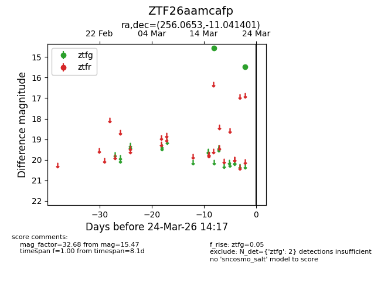
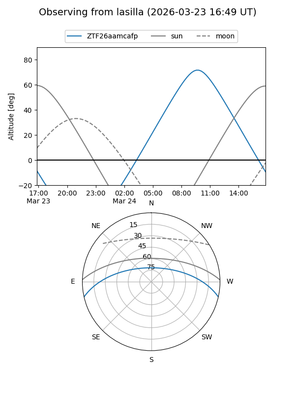
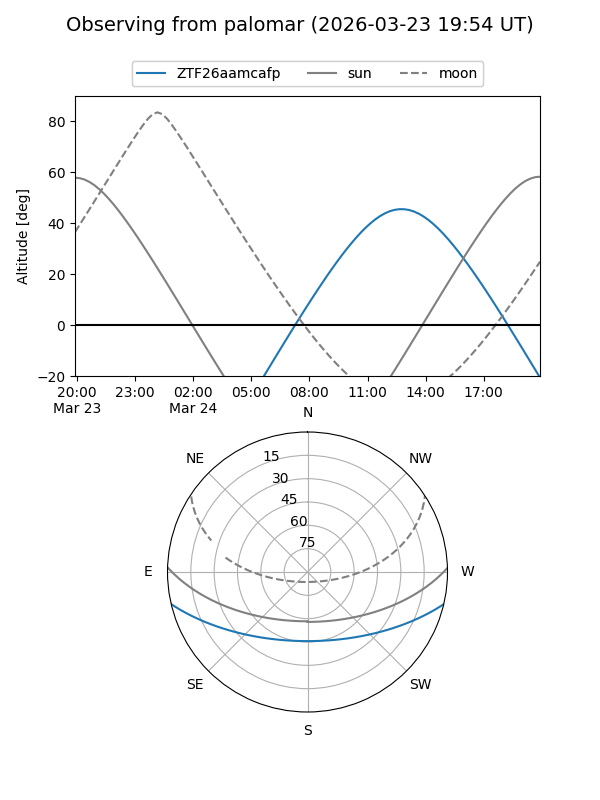

ZTF26aamcafp
Target ZTF26aamcafp at 2026-03-24 14:20
Aliases and brokers:
FINK: link
Lasair: link
ALeRCE: link
alt names
ZTF26aamcafp (ztf,fink_ztf)
Coordinates:
equatorial (ra, dec) = 256.0653,-11.04140
equatorial (HMS+DMS) = 17:04:15.66,-11:02:29.04
galactic (l, b) = (9.9147,+17.84481)
Flags:
Photometry:
last ztfg=15.47
2 ztfg detections
Lightcurve

Visibility


Additional plots